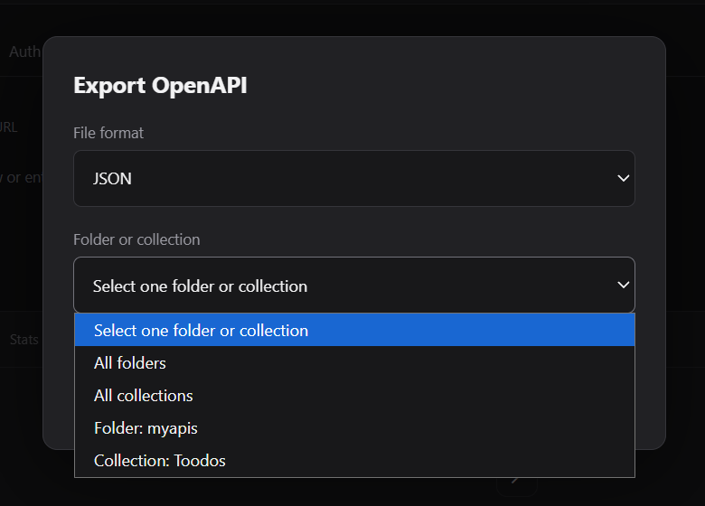

Import and export
Move request sets in and out of APIDesk using OpenAPI 3.x files.
Why use import and export
OpenAPI specs are the fastest way to bring an existing API definition into APIDesk, or to hand a collection to another teammate in a standard format.
You can export a folder or collection as JSON or YAML, and you can import a valid OpenAPI 3.x document into All requests, a specific folder, or a collection.
APIDesk expects a valid OpenAPI 3.x document with paths. JSON and YAML files are both supported.
Export OpenAPI
Use the Export action from the collection area to create a file from a folder or collection. You can choose between JSON and YAML.
- Choose a sourceSelect a single collection or folder, or export a broader set of folders or collections.
- Pick a formatDownload the file as JSON or YAML.
- Use the result elsewhereOpen the exported document in another tool, documentation system, or API client.
Import OpenAPI
Use the Import action to load a file from disk. APIDesk reads the OpenAPI document, creates one request per operation, and places the results into your chosen destination.
The import flow supports .json, .yaml, and .yml files. The destination can be:
- All requestsAdd every imported operation to your main request list.
- A folderSave the imported requests in a selected folder.
- A collectionImport the requests as collection copies with the collection structure.
What APIDesk maps from OpenAPI
During import, APIDesk converts the OpenAPI document into APIDesk requests and keeps the most important request details, including:
- HTTP method and endpoint URL
- Query params and path params
- Headers and request body content
- Basic operation metadata such as summary or generated name
Requests that cannot be parsed into a valid OpenAPI 3.x operation are skipped or reported as invalid, so you can fix the file before retrying.
